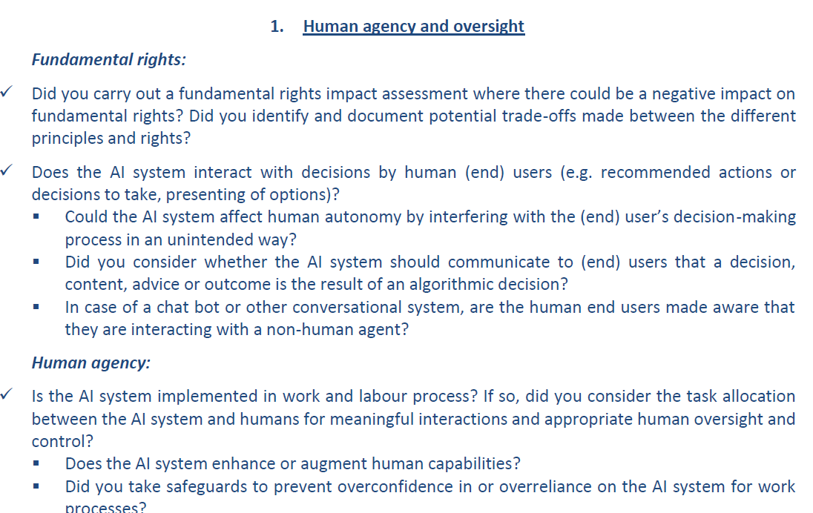

Human oversight¶
As stated by the EU, “human oversight ensures that an AI system does not undermine human autonomy or cause other adverse effects”.
Guidelines depending on the AI system lifecyle¶
Phase |
Guideline |
Practical consequences |
|---|---|---|
Conception (prior to AI system development) |
AI contributors should always assess “why” they set up an AI system prior to actually doing it |
|
Use (after AI system development) |
Users of an AI system must be able to control it |
* Definitions (inspired by EU):
Human-in-the-loop (HITL): human intervention in every decision of the AI system
Human-on-the-loop (HOTL): human intervention during the design of the AI system, and while the AI system operates, through monitoring e.g.
Human-in-command (HIC): humans oversee the AI system and its implications, with the possibility to decide when and how to use it
Risk & criticality¶
AI contributors must evaluate the risk and criticality of an AI system before starting to implement it, namely during ideation phases, among following risks:
Unacceptable Risk: the AI system must be banned
High Risk: the AI system must comply with regulation enforcements (see recommendations below)
Limited Risk: the AI system must be transparent for the user
Minimal Risk: the AI system is not subject to regulation
Definitions (click to unfold)
Directly quoted from ec.europa.eu- Unacceptable risk: AI systems considered a clear threat to the safety, livelihoods and rights of people [...]. This includes AI systems or applications that manipulate human behaviour to circumvent users' free will (e.g. toys using voice assistance encouraging dangerous behaviour of minors) and systems that allow ‘social scoring' by governments.
- High-risk AI systems include:
- Critical infrastructures (e.g. transport), that could put the life and health of citizens at risk
- Educational or vocational training, that may determine the access to education and professional course of someone's life (e.g. scoring of exams); safety components of products (e.g. AI application in robot-assisted surgery)
- Employment, workers management and access to self-employment (e.g. CV-sorting software for recruitment procedures);
- Essential private and public services (e.g. credit scoring denying citizens opportunity to obtain a loan);
- Law enforcement that may interfere with people's fundamental rights (e.g. evaluation of the reliability of evidence)
- Migration, asylum and border control management (e.g. verification of authenticity of travel documents);
- Administration of justice and democratic processes (e.g. applying the law to a concrete set of facts)
- Limited risk - AI system with transparency obligations: When using AI systems such as chatbots, users should be aware that they are interacting with a machine so they can take an informed decision to continue or step back.
- Minimal risk: the legal proposal allows the free use of applications such as AI-enabled video games or spam filters. The vast majority of AI systems fall into this category. The draft Regulation does not intervene here, as these AI systems represent only minimal or no risk for citizens' rights or safety.
Appendix - Recommendations from the EU¶
Below are the recommendations directly reported from EU.
{kind=link}
{kind=link}